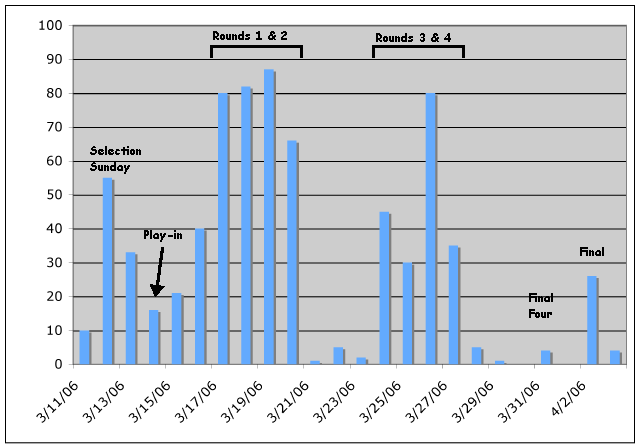

03.28.07
Posted in news at 1:29 am by danvk
I watched PBS Frontline’s Burden of Innocence tonight and bade farewell to whatever confidence I had in our legal system. The show follows several men as they’re released from long prison sentences by DNA evidence. They rarely adjust, and often wind up back in prison. It’s exceptionally difficult to get monetary compensation for wrongful imprisonment in most states and, what amazed me most, it’s impossible to get your name off the list of convicted felons. This makes getting a job next to impossible, which leads no the rest of their problems.
Clicking around, I found the sad case of Gary Dotson. Shortly after having sex with her boyfriend, Cathleen Crowell, a teenage girl, made up a rape accusation as a cover in case she got pregnant. She didn’t get pregnant, but the rape charge somehow found a life of its own. Gary Dotson was later charged and put in jail based largely on her false testimony. Fast-forward eight years and Cathleen (shock!) has a guilty conscience. She publicly renounces her story. But for various political reasons, the charges still stick. It isn’t until more competent lawyers and DNA evidence come into the mix that he’s finally exonerated. As a final sick twist, it turns out that she based her rape story on a scene in a trashy romance novel, Sweet Savage Love. I highly recommend reading the story I linked to above.
I had no idea how easily misleading statistics and logic could be used in a court of law. The most terrifying thing about all of this is that a perfect storm of politics, media and science were necessary for Gary Dotson’s release. How many thousands of other people haven’t had their perfect storm?
Permalink
03.22.07
Posted in sports, tv, web, wikipedia at 11:26 pm by danvk
I’ve been enjoying March Madness the past few weeks, even though my team got knocked out in the first round.
Internet video really is coming into its own. This year, for the first time, you can watch the games online with March Madness on Demand. As with the NewsHour Online Video Archive, there are still some kinks to work out. Biggest gripe: it only works in Internet Explorer 6 on Windows. No love for Mac users like myself. What’s worse is that you don’t even get a message telling you that IE6 is required if you load it in Firefox. It just mysteriously doesn’t work. Hopefully this tool will be better next year. The main thing is that it exists at all.
Oh, and if a game is being broadcast on CBS in your area, you’ll get a message saying it’s been blacked out. Yeesh.
The Wikipedia article on the 2007 tourney has been fun to watch. In the last ten days, it’s received over a thousand edits. Wikipedia edit counts aren’t a bad way to track current events. Here’s what the edit history for last year’s tourney looks like:

The major events stand out in stark relief. One caveat: if an article gets protected by an administrator in response to vandalism, it throws a wrench into the fluidity of edits. I’ll post a similar chart for this year’s tourney after it’s over.
Permalink
03.20.07
Posted in news, politics at 9:22 pm by danvk
I was struck by this story by Holly J, a woman who attended the recent anti-war protest in Washington. It’s mostly about the anti-anti-war protesters, who frighten her on her way to the protest. Then she unexpectedly comes face-to-face with one, and finds some perspective on the whole issue.
Permalink
03.18.07
Posted in personal at 12:35 am by danvk
File under “feeling old”… I got a copy of TurboTax today and started filling out form after form after form. Some thoughts:
- The Instant Data Entry feature is cool. You fill out your employer and total wages, and TT downloads the rest of the information from its database. Google participated in this, but Rice did not.
- TT asked me if I qualified for the “Ottoman Turkish Empire settlements” deduction. Ottoman empire? How many people could qualify for this? Some sleuthing turned up the story.
I kept thinking about what a nightmare this software must be to write. Nothing about taxes generalizes cleanly. It must be a tangled mess of “if A and B then go to C”. It’s the epitome of wizard-style programming.
It reminds me of a cool Atari ROM visualization I saw a few months back. It shows the control flow in the code of various Atari games. The line that stood out to me at the time was “Pac-Man, most complicated of the bunch, what with all the AI for the ghosts.” No doubt true, but what struck me was that AI is used as a synonym for “if statement”.
So not only does TT need to have an if statement for Armenian descendants of Ottoman citizens who were insured by New York Life, it needs to have equally complicated logic for all fifty states and probably even some cities.
In short, I’m glad I work for Google and not Intuit.
Permalink
03.14.07
Posted in news, web at 12:04 am by danvk
 Mad props to The NewsHour with Jim Lehrer for creating an online video archive. The archive contains most segments from February 2000 onwards. This includes some rather momentous events, like the September 11, 2001 broadcast. I was in French class when the planes hit the World Trade Center towers. A messenger came and told the teacher, but she decided the events weren’t significant enough to stop French class, or even to tell us what had happened! Ever since, I’ve wanted to watch the Today Show broadcast from that morning, to see the reactions right when it happened. NBC hasn’t opened their archives, but this is a step in the right direction.
Mad props to The NewsHour with Jim Lehrer for creating an online video archive. The archive contains most segments from February 2000 onwards. This includes some rather momentous events, like the September 11, 2001 broadcast. I was in French class when the planes hit the World Trade Center towers. A messenger came and told the teacher, but she decided the events weren’t significant enough to stop French class, or even to tell us what had happened! Ever since, I’ve wanted to watch the Today Show broadcast from that morning, to see the reactions right when it happened. NBC hasn’t opened their archives, but this is a step in the right direction.
The site has its problems. The streaming is a bit slow, and is only available in Real or Windows Media Player format. The “keyword search” is terrible. I suspect this will become yet another case where people will use Google in place of a site’s own search engine. It’s possible to view all the broadcasts for a specific date, but you’ll have to hack URLs to get at it. That September 11 URL I linked to above is
http://vvi.onstreammedia.com/cgi-bin/visearch?user=pbs-newshour
&template=template.html&squery=%2BVideoAsset:pbsnh091101
Just change the 091101 at the end to whatever date you like to view that day’s broadcasts. This is a pretty basic feature for a newscast video archive. It should have an interface. And the “Close Caption Transcript” popup reaches hitherto unexplored niches of Web UI weirdness.
The NewHour video archive is a wonderful resource. It has its UI problems. Its search is terrible. I wish it went back to 1975, when the NewsHour started. But this is a great start, and I’m sure more is yet to come. I hope other news shows take a cue from PBS and the NewsHour.
Permalink
« Previous entries
Next Page »

{kind=link}